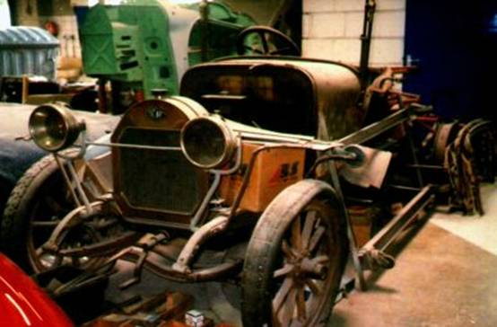

Mediation (in automotive), zie ook www.mediation.nl

Mediation is een vorm van conflictoplossing die vele voordelen biedt t.o.v de gebruikelijke. Een voorbeeld:
”Tijdens een ingewikkeld project als een restauratie kan er van alles mis gaan.
Zo ernstig zelfs dat het plezier je totaal ontgaat en de communicatie met de restaurateur of organisatie zo ernstig verstoord is
dat het project geen voortgang meer vindt. Er is een conflict ontstaan, u komt er niet meer uit.
In plaats van het starten van een juridische procedure bij een rechter, kunt u kiezen voor Mediation”.
Mediation is: het inschakelen van een onafhankelijke bemiddelaar (mediator) die beide partijen helpt het conflict op te lossen.
Dat kan vaak veel geld en tijd besparen.
Bij Mediation werkt u zelf aan de oplossing, maar daar krijgt u wel deskundige hulp bij.
Ruim de helft van de zaken waar een mediator bij wordt ingeschakeld krijgt een geheel of gedeeltelijk goede afloop.
- Mediation is een vorm van conflictoplossing waarbij beide partijen winst behalen: duo winst. De relaties worden hersteld en niet beschadigd.
- Dit in tegenstelling tot een rechtzaak, hierbij is er altijd een winnaar en een verliezer.
- Het is vrijwillig.
- Strikt vertrouwelijk, het conflict ligt niet op straat.
- Veel sneller en goedkoper dan andere vormen van conflictoplossing.
- Als mediator ben ik de begeleider in dit proces.